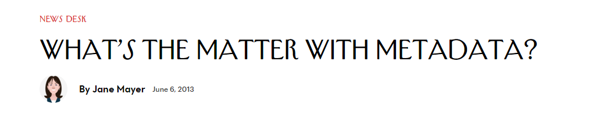
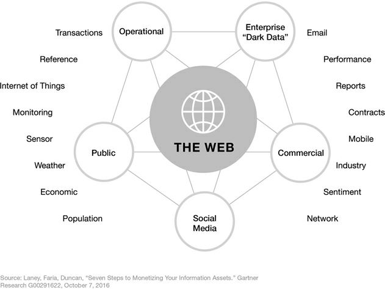
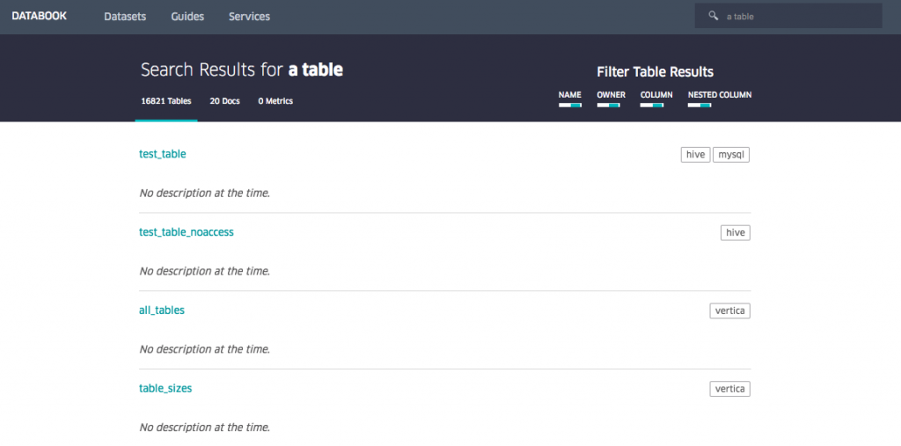
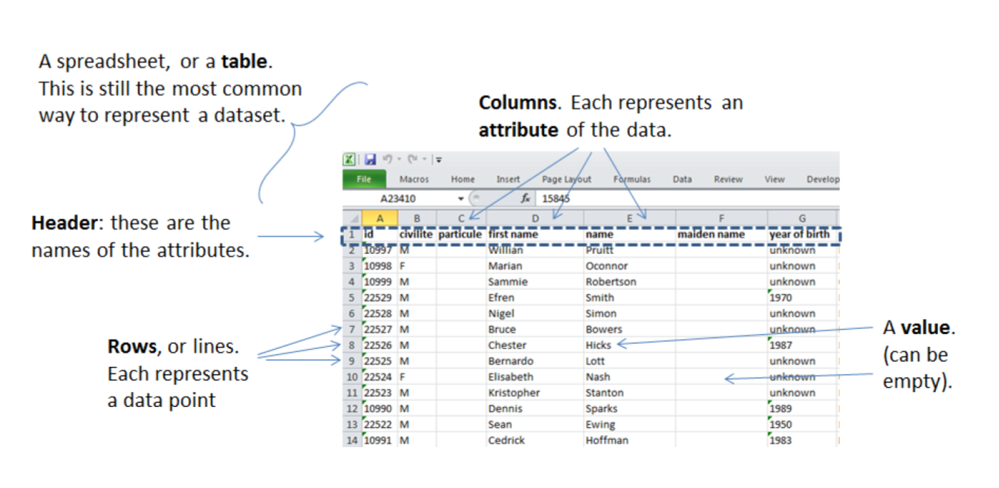
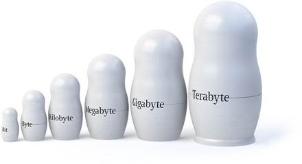

La référence bibliographique (1) décrivant un livre (2)
La donnée, un concept à multiples facettes
2018-06-17
last modified: 2023-05-15
== !
1. Définition des données
Le terme anglais "data" (1654) provient de "datum ", un mot latin pour "un fait, une observation de la nature". "Données" est un seul fait, une seule entité, un seul point de la réalité.
Le mot "données" signifiant "informations informatiques transmissibles et stockables" a été utilisé pour la première fois dans ce sens en 1946 en anglais. L’expression "traitement de données" a été utilisée pour la première fois en 1954, toujours en anglais.
Tip | Réflexion: l’étymologie suggère que les données sont "un fait naturel". Pouvez-vous remettre cela en question? |
Les données représentent soit une entité unique, soit une collection de telles entités ("jeu de données"). Nous pouvons aussi parler d’ensembles de données (un ensemble de données, ou jeu de données est donc une collection de points de données).
2. La variété des ensembles de données
Une date | Une couleur | Une note |
Une relation d’amitié | Un son | Un battement de coeur |
Un commentaire d’utilisateur | Une durée | Un curriculum vitae |
Une image | Une longitude et une latitude | Un prix |
Un certain nombre d’amis | Une température | Une liste de films préférés |
etc … | etc … | etc … |
Ces exemples illustrent trois principes:
a. Pensez aux données au sens large
Les données ne sont pas seulement numériques, ni "ce qui se trouve dans mes feuilles de calcul". Vous devriez vous entraîner à penser aux données dans un sens plus large:
Les images sont des données
la langue est donnée (y compris l’argot, les mouvements de lèvre, etc.)
les relations sont des données: l’individu A est connu, l’individu B est connu, mais la relation entre A et B est aussi une donnée
les préférences, les états émotionnels … sont des données
etc. Il n’y a pas de liste définitive, vous devez vous entraîner à regarder les situations d’affaires et penser: "où sont les données ?"
b. les métadonnées sont aussi des données
Les métadonnées sont des données décrivant d’autres données.
Exemple:
les métadonnées
les données
Les données sans métadonnées peuvent être sans valeur (imaginez une bibliothèque sans catalogue de bibliothèque)
Les métadonnées peuvent être informatives en soi, comme le montre le scandale NSA (lire cet article du New Yorker à propos de la NSA et des métadonnées).

Figure 1. Le problème avec les métadonnées
c. Zoom avant, zoom arrière
Nous devrions nous rappeler de considérer qu’un point de données peut être lui-même une collection de points de données:
Une personne entrant dans un bâtiment est un point de données.
cependant cette personne est elle-même une collection de points de donnée : données de localisation + réseau de relations + statut d’abonné à tel service + etc.
C’est un bon réflexe de se demander si un point de données peut en fait être "dégroupé" (se désagréger en plus petits points de données / mesures)
d. Pour créer de la valeur à partir de données, vous devez d’abord pouvoir identifier les données et leur emplacement.
Les organisations qui ne connaissent pas les informations qu’elles peuvent ou pourraient acquérir ne sont pas en mesure d’en tirer parti. Comme l’a récemment reconnu un DSI d’une grande compagnie d’assurance: "Il est stupide que quelqu’un ici ait un inventaire de nos meubles de bureau, mais personne dans la société n’a un inventaire de nos données."
Infonomics: How to Monetize
— Douglas Laney
— Douglas Laney
Où se trouvent les données? Un inventaire doit être fait. Ce diagramme est tiré de Infonomics de Douglas Laney:

Figure 2. Inventaire des actifs informationnels
Comme indiqué dans la citation ci-dessus, peu d’entreprises ont mis en place une "gestion des données" pour s’assurer que les données sont connues, répertoriées, de qualité et exploitables. Une exception positive intéressante: Uber a mis en place un "databook" stockant les métadonnées relatives aux jeux de données dans l’entreprise:

Figure 3. Databook par Uber: rendre consultable et utilisable la medatada
Les employés peuvent rechercher dans cette base de données pour découvrir et accéder aux données dont ils ont besoin.
Un autre effet secondaire très important du databook est qu’il rend très clair et visible qui est le "propriétaire" d’un ensemble de données. Définir la propriété des données est un élément important de la gouvernance des données d’une entreprise.
(un article de blog détaillé sur le databook d’Uber est disponible ici)
3. Comment décrire les ensembles de données
a. Formats, types, codage
Il s’agit d’un support numérique (parce qu’il est à l’écran par opposition à l’analogique, si nous avions imprimé l’image sur papier)
Le type des données est textuel + image
Le texte est formaté en texte brut (ce qui signifie, pas de formatage spécial), par opposition aux formats d’échange de données qui sont des marques de mise en forme ajoutées au texte pour faciliter sa lisibilité par un logiciel (csv, json et xml).
L'encodage du texte est UTF-8 (un des encodages issus de la norme Unicode). L’encodage traite de la question : comment représenter les alphabets, les signes (par exemple: emojis) et les symboles, de différentes langues, dans le texte? UTF-8 est un encodage qui est l’un des plus universels.
Le tweet fait partie d’une liste de tweets. La liste représente la structure de données de l’ensemble de données, c’est la façon dont les données sont organisées. Il existe de nombreuses structures de données alternatives: tableaux, ensembles, "dics", "maps" …
Le tweet est stocké sous forme d’image (fichier png) sur le disque dur. "png" est le format de fichier. Les données sont persistées en tant que fichier sur le disque (elles auraient pu être stockées dans une base de données à la place).
b. Données tabulaires
Les données tabulaires sont un moyen courant de gérer les ensembles de données, en les organisant en lignes et en colonnes :

Figure 4. données tabulaires
c. Données "first party", "second party" et "third party"
First party data: les données générées par les activités de votre propre organisation. Votre organisation en est propriétaire, ce qui ne signifie pas que le consentement des utilisateurs n’est pas requis en ce qui concerne les données personnelles.
Second party data: les données acquises auprès de partenaires qui ont généré cette donnée. Les partenaires mettent ces données, dont ils sont propriétaires, à votre disposition dans le cadre d’un accord ou d’une transaction payante.
Données tierces ou "third party data": les données acquises auprès de revendeurs. Ces données sont le plus souvent acquises via une transaction de marché.
d. Données sociodémo vs données de comportement
Les données sociodémogaphiques ou sociodémo se réfèrent aux informations sur les individus, décrivant les attributs fondamentaux de leur identité sociale: âge, sexe, lieu de résidence, profession, statut matrimonial et nombre d’enfants.
Les données de comportement ou "behavior data" se réfèrent à toute trace numérique laissée par l’individu au cours de sa vie : clics sur des pages web, likes sur Facebook, transactions d’achat, commentaires postés sur Tripadvisor …
Les données sociodémographiques sont généralement bien structurées ou faciles à structurer. Elles ont une longue histoire de collecte et d’analyse, essentiellement depuis que le recensement existe.
Les données de comportement permettent de profiler les individus beaucoup plus précisément que les données sociodémographiques seules : les individus peuvent être caractérisés par leurs actes et leurs goûts, bien au-delà de ce qu’un âge ou un état matrimonial pourrait définir.
Comment les données de comportement peuvent-elles "battre" les données sociodémo, en terme de précision? Il est difficile de prédire avec une grande précision l’orientation politique, religieuse ou sexuelle d’un individu en fonction de son code postal, de son sexe et de son âge. Une équipe de recherche a pu évaluer ces attributs personnels avec une grande précision basée sur les likes que les individus font sur les pages et les messages Facebook.
L’orientation politique (précision de 85%), l’orientation sexuelle (précision de 75% à 88%) et l’orientation religieuse (exactitude de 82%) peuvent être déterminées pour les personnes ayant fait en moyenne 170 likes.
Mais les données comportementales ne sont généralement pas bien structurées, ce qui les rend plus coûteux à collecter, en terme de solution technologique, que de collecter des données sociodémographiques. La puissance et l’exactitude de la prédiction que procurent les données comportementales signifient également que les individus devraient être protégés contre l’invasion possible de leur vie privée.
Il existe de grandes différences entre les pays en ce qui concerne les cadres juridiques protégeant les droits des individus. Nous en discutons dans le chapitre sur la confidentialité des données et le GDPR.
4. Données et taille

Figure 5. Volumes de données
1 bit | peut stocker une valeur binaire (oui / non, vrai / faux …) | |
8 bits | 1 octet (ou octet) | peut stocker un seul caractère |
~ 1,000 octets | 1 kilooctet (kb) | Peut stocker un paragraphe de texte |
~ 1 million d’octets | 1 mégaoctet (Mb) | Peut stocker une photo basse résolution. |
~ 1 milliard d’octets | 1 gigaoctet (Go) | Peut stocker un film |
~ 1 billion d’octets | 1 téraoctet (Tb) | Peut stocker 1 000 films. La taille des disques durs commerciaux en 2017 est de 2 To. |
Des vidéos simples sur le sujet
Qu’est-ce que la donnée? https://youtu.be/ODb-CaVmczY
Que faire de la donnée? https://youtu.be/mthHsZ0oC8A
Pour aller plus loin
Retrouvez le site complet : ici.

Clement Levallois
Découvrez mes autres cours et projets : https://www.clementlevallois.net
Ou contactez-moi via Twitter: @seinecle